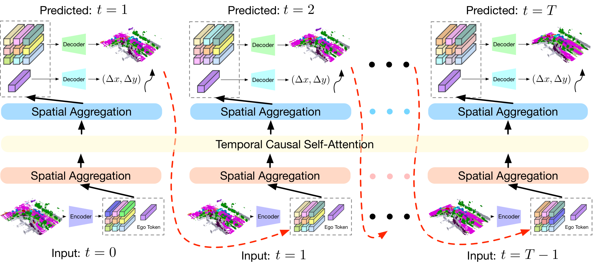
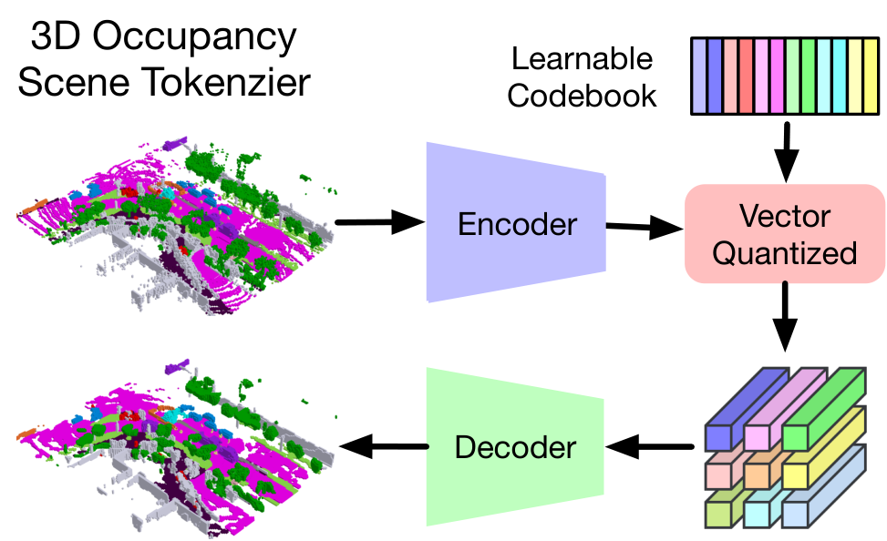
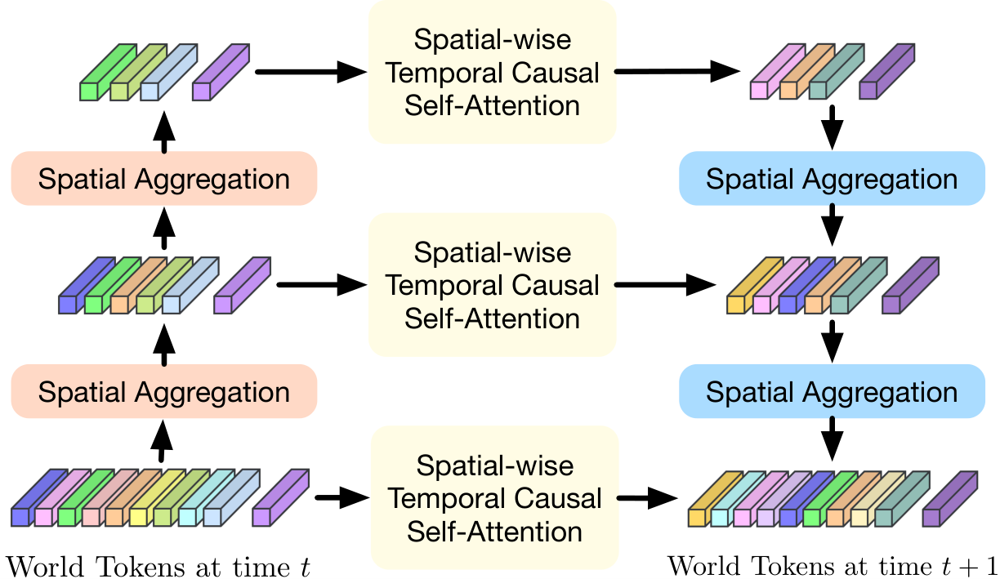
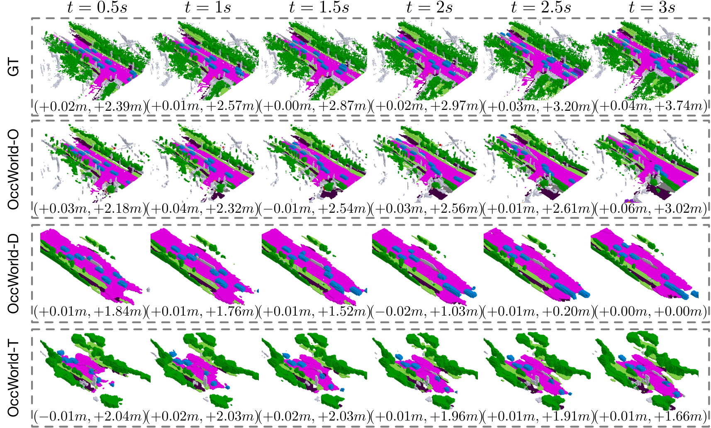

0. 页面头部：论文身份卡片
| 论文 | OccWorld: Learning a 3D Occupancy World Model for Autonomous Driving |
|---|---|
| 作者 | Zheng, Wenzhao；Chen, Weiliang；Huang, Yuanhui；Zhang, Borui；Duan, Yueqi；Lu, Jiwen |
| 时间 | 2023/11/27 |
| 方向 | 3D occupancy world model / GPT-like generative transformer |
| 核心贡献 | OccWorld 将 3D occupancy 量化为离散 scene tokens，并用 GPT-like spatial-temporal generative transformer 自回归预测未来占据和 ego trajectory，实现细粒度 3D 场景演化建模。 |
| 模型类型 | 以离散 3D semantic occupancy token 为世界状态的自回归世界模型，同时预测未来占据和 ego 运动。 |
| 输入 | 历史 3D semantic occupancy、ego motion 与可选动作/轨迹条件。 |
| 中间表示 | scene tokenizer 用 CNN 和向量量化把 3D occupancy 压缩为离散 world token；时空生成 Transformer 预测下一场景 token。 |
| 输出 | 未来 3D semantic occupancy 与 ego trajectory。 |
| 训练目标 | tokenizer 重建与 VQ 目标、world token next-token prediction、语义 occupancy 与规划监督。 |
| 代码与复现状态 | 是，代码、可视化、训练日志和预训练模型公开；很高：3D occupancy 表示世界模型代表 |
1. 论文速览：用一页讲清楚价值
1.1 一句话贡献
OccWorld 将 3D occupancy 量化为离散 scene tokens，并用 GPT-like spatial-temporal generative transformer 自回归预测未来占据和 ego trajectory，实现细粒度 3D 场景演化建模。
1.2 论文专属关键词
3D occupancy、scene tokenizer、vector quantization、GPT-like transformer、spatial-temporal generation、4D occupancy forecasting、motion planning、nuScenes
1.3 技术定位
以离散 3D semantic occupancy token 为世界状态的自回归世界模型，同时预测未来占据和 ego 运动。
1.4 论文构建了什么
| 输入 | 历史 3D semantic occupancy、ego motion 与可选动作/轨迹条件。 |
|---|---|
| 编码与融合 | scene tokenizer 用 CNN 和向量量化把 3D occupancy 压缩为离散 world token；时空生成 Transformer 预测下一场景 token。 |
| 输出 | 未来 3D semantic occupancy 与 ego trajectory。 |
| 训练目标 | tokenizer 重建与 VQ 目标、world token next-token prediction、语义 occupancy 与规划监督。 |
1.5 核心结论与证据链
OccWorld 的核心选择是不用 3D boxes 或像素视频表示世界，而用 3D occupancy：它能表达细粒度结构，标注成本相对低，也兼容 vision/LiDAR。方法先训练 reconstruction-based scene tokenizer，把 3D occupancy 压成离散 tokens；再用 GPT-like spatial-temporal transformer 预测后续 scene tokens 和 ego tokens；最后解码未来 occupancy 并输出 ego trajectory。论文在 nuScenes 上展示 4D occupancy forecasting 和 motion planning，且在 Figure 1 中明确给出失败边界：对输入视野之外新进入的车辆预测困难。
核心证据来自：Occupancy forecasting、规划指标、tokenizer/Transformer 消融与三种 OccWorld 变体可视化。。证据边界是：占据预测准确不等于交互式 agent 行为正确；离散 codebook 可能抹去细小障碍和动态细节。
2. 研究问题与动机：为什么需要这篇论文
2.1 核心问题与成功标准
预测 3D box 只能描述已知对象中心和尺寸，无法刻画道路边界、可行驶区域、遮挡结构和细粒度障碍；像素世界模型又难以验证几何安全。OccWorld 选择 occupancy 是为了在可计算的 3D 网格中同时表达动态场景和 ego 运动，让世界模型输出更接近规划需要的空间约束。
2.2 现有方法的具体不足
该论文针对的瓶颈不是笼统的“泛化不足”，而是：视频世界模型视觉丰富但几何难验证；BEV 2D 状态丢失高度，3D occupancy 更适合碰撞与规划，但牺牲纹理语义。
2.3 为什么不走显而易见的替代路线
视频世界模型视觉丰富但几何难验证；BEV 2D 状态丢失高度，3D occupancy 更适合碰撞与规划，但牺牲纹理语义。
3. 相关工作脉络：这篇论文从哪里来
3.1 技术家族与直接前作
OccWorld 与 occupancy perception（OccNet/OpenOccupancy/SurroundOcc）、world model、GPT-style sequence modeling 相连。相对 Drive-WM/DriveDreamer 的像素/视频 diffusion，它更偏结构化 3D 表示；相对 UniAD/VAD 等端到端 planner，它不依赖 box/map/motion 多种辅助监督，而是用 occupancy evolution 学世界动态。
3.2 本文新意属于表示、架构、训练还是评估
从技术地图看，本文的主要新意可概括为：以离散 3D semantic occupancy token 为世界状态的自回归世界模型，同时预测未来占据和 ego 运动。。它并非简单替换 backbone，而是围绕输入表示、中间信息流或评价方式重新定义了论文的核心问题。
4. 方法总览图：先看完整信息流
4.1 主框架图与机制

4.2 信息流一句话串联
输入：历史 3D semantic occupancy、ego motion 与可选动作/轨迹条件。；中间处理：scene tokenizer 用 CNN 和向量量化把 3D occupancy 压缩为离散 world token；时空生成 Transformer 预测下一场景 token。；最终输出：未来 3D semantic occupancy 与 ego trajectory。；训练约束：tokenizer 重建与 VQ 目标、world token next-token prediction、语义 occupancy 与规划监督。
5. 方法详解：输入、表示、融合、解码、训练与部署
5.1 输入表示
历史 3D semantic occupancy、ego motion 与可选动作/轨迹条件。。复现时首先要确保各模态的时间同步、坐标系、可见范围与训练时一致；任何一个上游输入偏移都可能被后续大模型放大。
5.2 编码器与融合设计
scene tokenizer 用 CNN 和向量量化把 3D occupancy 压缩为离散 world token；时空生成 Transformer 预测下一场景 token。
5.3 中间表示为何重要
中间表示决定模型保留何种几何、语义和时间信息。该论文的关键中间链路是：scene tokenizer 用 CNN 和向量量化把 3D occupancy 压缩为离散 world token；时空生成 Transformer 预测下一场景 token。。它让最终输出能够利用这些信息，但也把上游表示误差带入规划或预测。
5.4 解码、动作生成或未来预测
未来 3D semantic occupancy 与 ego trajectory。
5.5 训练目标及副作用
tokenizer 重建与 VQ 目标、world token next-token prediction、语义 occupancy 与规划监督。。这些目标直接约束对应监督输出，却不会自动保证真实闭环安全、跨域鲁棒性或因果可解释性。
5.6 训练阶段与数据风险
Scene tokenizer 使用 CNN 将 3D occupancy 转成 BEV-like latent，再通过 vector quantization 得到离散 scene tokens，并用 decoder 重建 occupancy。World model 部分采用 spatial-temporal generative transformer：空间维关注同一时刻的 occupancy token 关系，时间维自回归建模过去到未来的场景演化，同时预测 ego movement tokens。规划模块利用未来 occupancy 和 ego trajectory 计算 motion planning 输出。训练包括 tokenizer 重建和 transformer 未来 token 预测。
5.7 推理与部署流程
目前主要在离线 occupancy forecasting 与 motion planning benchmark；完整闭环仍需要感知前端和控制器。
6. 原论文图解：逐图拆解证据含义
7.1 Figure 2：Framework of our OccWorld for 3D semantic occupancy forecast
7.2 Figure 3：Illustration of the proposed 3D occupancy scene tokenizer. W

7.3 Figure 4：Illustration of the proposed spatial-temporal generative tra

7.4 Figure 5：Visualizations of the forecasting and planning results of Oc

7. 实验与结果：把证据链拆开
7.1 数据集、任务与划分
实验围绕该论文的技术定位组织：以离散 3D semantic occupancy token 为世界状态的自回归世界模型，同时预测未来占据和 ego 运动。。需要特别区分离线预测、生成质量、开环规划与真实/仿真闭环，因为它们使用不同成功标准；本论文主要证据为：Occupancy forecasting、规划指标、tokenizer/Transformer 消融与三种 OccWorld 变体可视化。
7.2 Baseline 为什么重要
论文的比较应围绕其技术定位理解：以离散 3D semantic occupancy token 为世界状态的自回归世界模型，同时预测未来占据和 ego 运动。。强 baseline 用来判断收益来自新增信息流、模型容量还是评估协议；仅与较弱旧方法比较不足以证明论文主张。
7.3 指标如何对应论文主张
本文实验所依赖的证据为：Occupancy forecasting、规划指标、tokenizer/Transformer 消融与三种 OccWorld 变体可视化。。离线预测误差、生成质量、规划指标或闭环分数各自只衡量部分能力，不能互相替代。
7.4 主结果与机制是否一致
实验包括 4D occupancy forecasting 和 motion planning。Table 2 与 IL/NMP/FF/EO/ST-P3/UniAD/VAD 等比较 L2 和 Collision Rate；论文强调 OccWorld 在不使用 instance/map supervision 的情况下取得有竞争力规划结果。Figure 1 定性展示模型能预测动态 agents、drivable area 等未来结构，甚至在部分区域生成比 GT 更合理的可行驶区域；同时也承认无法预测输入中不存在的新车进入视野。证据缺口是 occupancy 标签质量和空间分辨率会限制上限。
8. 消融、失败案例与证据缺口
8.1 消融实验应回答什么
最关键的消融需要隔离该论文的核心信息流：Occupancy forecasting、规划指标、tokenizer/Transformer 消融与三种 OccWorld 变体可视化。。如果去掉核心模块后只在部分指标下降，需要进一步判断收益是否集中于特定场景。
8.2 失败案例与证据缺口
占据预测准确不等于交互式 agent 行为正确；离散 codebook 可能抹去细小障碍和动态细节。
8.3 论文没有证明什么
现有结果不能直接推出：占据预测准确不等于交互式 agent 行为正确；离散 codebook 可能抹去细小障碍和动态细节。
9. 复现要点：真正动手会遇到什么
9.1 最小可行复现路线
复现路径：准备 nuScenes occupancy 标签，训练 tokenizer 重建当前 occupancy，再训练 spatial-temporal transformer 预测未来 tokens，最后跑 planning metric。官方仓库提供 visualization、training log 和 pretrained model，可先运行 visualize_demo.py。硬件需求中等偏高，取决于 occupancy grid 分辨率和 token 数。阻塞点是 occupancy 数据准备、VQ codebook collapse、长 horizon 自回归误差。验收标准是 4D occupancy mIoU/VPQ 等预测指标和 L2/Collision 规划指标趋势。
9.2 数据、模型、硬件与阻塞点
数据与接口重点：历史 3D semantic occupancy、ego motion 与可选动作/轨迹条件。。模型重点：scene tokenizer 用 CNN 和向量量化把 3D occupancy 压缩为离散 world token；时空生成 Transformer 预测下一场景 token。。部署重点：目前主要在离线 occupancy forecasting 与 motion planning benchmark；完整闭环仍需要感知前端和控制器。。论文未明确披露的硬件与训练成本不在此推测。
9.3 验收标准
复现成功不应只以脚本运行结束为标准，而应至少复现论文核心趋势：Occupancy forecasting、规划指标、tokenizer/Transformer 消融与三种 OccWorld 变体可视化。；同时检查输出是否在论文声称的边界外快速退化。
10. 分析、局限与边界：作者没说完的部分
10.1 最有价值贡献
OccWorld 的价值是把世界模型放到规划友好的 3D occupancy 空间，使预测结果比像素视频更容易用于安全约束。它的局限也明确：不可见对象、label 噪声、grid 分辨率和自回归误差会限制未来预测。后续可与相机 raw video world model 融合：像素模型补语义细节，occupancy 模型负责几何验证。
10.2 主张—证据—充分性
| 论文主张 | 以离散 3D semantic occupancy token 为世界状态的自回归世界模型，同时预测未来占据和 ego 运动。 |
|---|---|
| 支撑证据 | Occupancy forecasting、规划指标、tokenizer/Transformer 消融与三种 OccWorld 变体可视化。 |
| 充分性判断 | 对论文评测范围内的机制结论较有支持；对真实闭环、跨域或安全泛化仍不足。 |
| 原因 | 占据预测准确不等于交互式 agent 行为正确；离散 codebook 可能抹去细小障碍和动态细节。 |
10.3 可行改进方向
加入动作条件反事实 rollout；对 rare obstacle 使用多尺度 codebook；在闭环仿真中评价累计漂移。
10.4 后续实验建议
| 核心模块去除/替换 | 隔离论文主张，观察核心指标是否按预期下降 |
|---|---|
| 跨域或扰动测试 | 检查方法是否依赖训练分布和干净输入 |
| 闭环 rollout | 观察误差累积、碰撞与恢复 |
| 不确定性/安全验证 | 识别高风险预测并建立 fallback |
11. 组会问答准备
Q: 为什么不用 3D box？
A: box 只能描述实例，不能表达自由空间、道路边界和细粒度占据结构。
Q: scene tokenizer 的作用？
A: 把高维 3D occupancy 压成离散 token，使 GPT-like transformer 可以高效自回归预测未来。
Q: OccWorld 和 Drive-WM 的区别？
A: Drive-WM 预测多视角像素视频；OccWorld 预测 3D occupancy，几何更可验证但视觉细节少。
Q: 论文主动承认的失败是什么？
A: 难以预测输入中不存在、未来才进入视野的新车。
Q: 复现先跑什么？
A: 先用官方 pretrained model 跑 visualization，确认 occupancy 数据链路，再训练 tokenizer 和 transformer。
12. 我的阅读笔记：转成自己的研究素材
12.1 最值得借鉴的点
适合作为“结构化 3D WM”代表。可与 Drive-WM/GAIA-1 共同构成像素-多视角-occupancy 三类世界模型路线图。
12.2 与同目录论文的比较钩子
可从“语言是否直接影响动作、是否显式预测未来世界、是否真实闭环、是否保留 3D 几何、是否使用 agent/tool/memory”五条轴与同目录论文比较。本文的定位为：以离散 3D semantic occupancy token 为世界状态的自回归世界模型，同时预测未来占据和 ego 运动。
12.3 可行动创新点
加入动作条件反事实 rollout；对 rare obstacle 使用多尺度 codebook；在闭环仿真中评价累计漂移。
13. 附录图解与证据索引
本文使用的原始图件均来自 arXiv 源码，图注保留或准确转述。其他附录图未被机械堆入页面；只有能够解释方法、结果、消融或失败的图件才被选择。